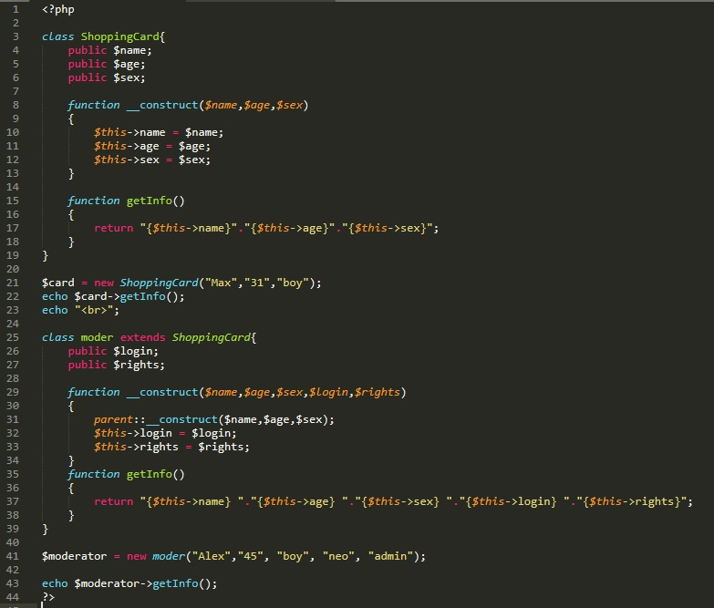

Некоторые классы могут наследовать свойства других классов, такие классы называютт дочерние, родительскими классами называют тех свойства которых было наследовано
для того что бы указать что наш класс наследует свойства и методы родительского класса, в объявлении класса используют оператор extends после которого указывается имя родительского класса
Рассмотрим один пример
СТР 3-19 - в этой части кода мы объявили родительский класс ShoppingCard у которого три свойства (стр 4-6), конструктор (стр 8-13) и есть метод getInfo (стр 15-18) который возвращает значения свойств
СТР 21-23 - в этой части кода мы объявили переменную card которая стала экземпляром класса ShoppingCard. при помощи конструктора класса мы задали значения свойствам, и вызвав функцию getInfo вывели все значения на экран, после чего вывели тег перевода на новую строку
СТР 25-39 - мы объявили класс moder, который наследует свойства и методы класса ShoppingCard (об этом нам говорит оператор extends)(стр 25). В нашем новом классе мы добавили два свойства (стр 26-27) и так же создали конструктор (стр 29-34). Отметим то, что внутри конструктора мы ссылаемся на родительский конструктор при помощи оператора parent (стр 31), что позволяет не переписывать лишних строк кода. Внутри нашего класса мы так же добавили метод getInfo и добавили ему выходных параметром
СТР 41-43 - на этом участке мы создаем объект класса moder, с помощью конструктора мы заполняем свойства, после чего обращаемся к объекту класса moder и вызываем метод getInfo. Полученный результат выводим на экран с помощью echo.